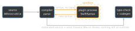
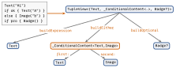

swift · folio
In one line: A macro (Swift 5.9) is a compiler plugin that receives the
syntax tree of its use site and returns new syntax, spliced in
at compile time — additive only, no runtime cost. A result
builder (@resultBuilder, Swift 5.4) rewrites the statements of a
closure into nested static build… calls that fold them into
one value — the engine behind SwiftUI’s @ViewBuilder.
Download PDF Print view LaTeX source

Macros
- Declaration (your library):
macro stringify<T>(_ v: T) -> (T, String) = #externalMacro(module: "MyMacros", type: "StringifyMacro"). Implementation: a.macrotarget (SwiftPM) — structs conforming toExpressionMacro,MemberMacro, … with a staticexpansion(of:…in:), registered by an@mainCompilerPlugin. - The plugin runs as a separate, sandboxed process (no file system, no network): input = syntax nodes (SwiftSyntax), output = syntax. It sees no types — only the text of the code.
- Hygienic: invented names come from
makeUniqueName(); names your code will use must be declared (names: named(x),prefixed(_),arbitrary). Errors viacontext.diagnose(…). - Debug: right-click → Expand Macro in Xcode; test with
assertMacroExpansion(SwiftSyntaxMacrosTestSupport). Package macros need Trust & Enable (CI:xcodebuild -skipMacroValidation).
| Role | Adds | Real example |
|---|---|---|
Freestanding #name — @freestanding(…) | ||
expression | one value | #expect(a == b) |
declaration | decls at that spot | #Preview { V() } |
Attached @Name — @attached(…) | ||
peer | decls beside the target | @Test func t() |
member | decls inside the type | @Observable registrar |
accessor | get/set: stored → computed | @ObservationTracked |
memberAttribute | attributes on each member | @Observable → tracked |
extension | extension + conformances | : Observable |
body (6.0) | a function body | SE-0415 |
Example — @Observable, expanded (abridged)
@Observable final class Model { var name = "" }
// -> Expand Macro:
final class Model {
@ObservationTracked var name = "" // memberAttribute
@ObservationIgnored private let _$observationRegistrar =
Observation.ObservationRegistrar() // member
internal nonisolated func access<M>(keyPath: KeyPath<Model, M>)
internal nonisolated func withMutation<M, R>(...) // member
}
extension Model: Observation.Observable {} // extension
// @ObservationTracked (accessor + peer) turns `name` into
// get { access(keyPath: \.name); return _name }
// set { withMutation(keyPath: \.name) { _name = newValue } }
// + peer storage @ObservationIgnored private var _name = ""Where a macro runs

Macro traps
- Macros cannot see types (
#m(x)gets the text “x”, notInt) and cannot delete or rewrite the code they annotate — they only add. - Names not declared in
names:are invisible → “cannot find in scope”.
Result builders
Mark a type @resultBuilder; put it on a closure parameter or computed property (@ViewBuilder var body). The compiler rewrites the body at compile time; the build… methods run at runtime with real values. Each statement kind needs its method:
| Method | Enables |
|---|---|
buildBlock(_ c: C...) -> C | a block — the only required one |
buildExpression(_ e: E) -> C | lifts each line; overload per input |
buildOptional(_ c: C?) -> C | if without else, if let |
buildEither(first:) / (second:) | if/else, switch |
buildArray(_ cs: [C]) -> C | for…in |
buildLimitedAvailability | if #available (erases type) |
buildPartialBlock(first:), (accumulated:next:) | pairwise fold, any count (5.7) |
buildFinalResult | convert to the public type |
@resultBuilder enum Lines {
static func buildBlock(_ p: String...) -> String {
p.joined(separator: "\n") }
static func buildOptional(_ p: String?) -> String {
if let p { p } else { "" } }
}
func doc(@Lines _ make: () -> String) -> String { make() }
let s = doc { "title"; if vip { "gold" } }
// = buildBlock("title", buildOptional(vip ? "gold" : nil))What @ViewBuilder builds

The two branches are different
views (structural identity): flipping ok destroys A’s @State
and runs a transition. Keep identity with a modifier:
.opacity(ok ? 1 : 0).
Builder traps
ViewBuilderhas nobuildArray: aforinbodydoes not compile — useForEach(it also carries per-row identity).- An explicit
returnturns the transform off. Not allowed:while,repeat,guard,break/continue,defer,do-catch. - “Max 10 views” came from
buildBlockoverloads — gone with parameter packs (Swift 5.9).